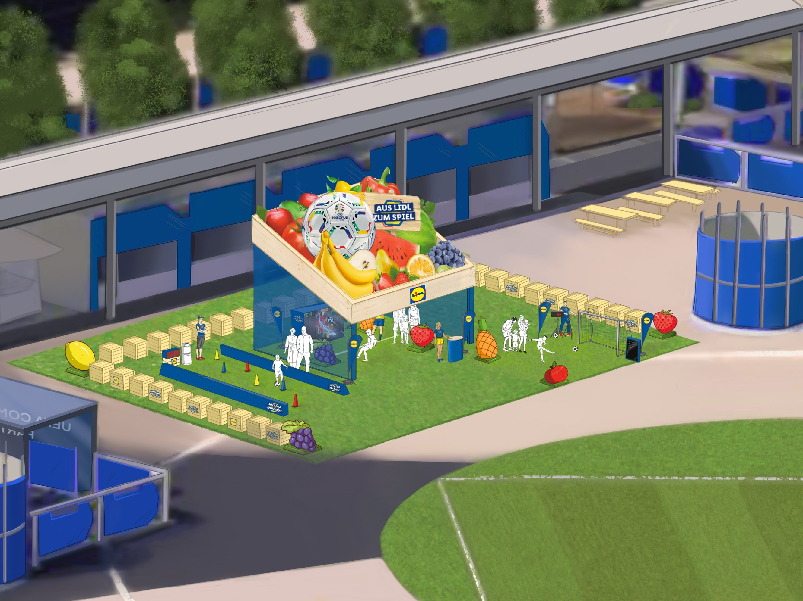

Sponsor presence at major sporting events is noise. Banners, logos, free samples — fans have learned to tune them out. For Lidl, the risk was doubly acute: as a discounter, the brand needed to earn its place at a football event, not just buy it. A presence that felt transactional or out of place would have done more harm than good.
There was also a hard constraint to navigate. At the time of concept development, UEFA regulations restricted Fresh Food sampling within the official Fan Zones, though Lidl was actively negotiating to loosen that restriction. The concept was built to work either way: robust enough without sampling, stronger with it.
